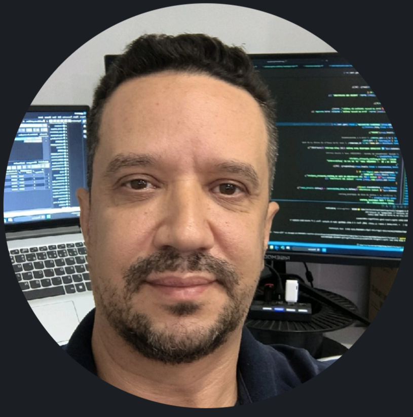

ALLISON MENDES
Analista de Sistemas | ERP e Sistemas Integrados | Infraestrutura
Londrina - PR | (43) 99981-9803 | allisonmendes@gmail.com
LinkedIn: linkedin.com/in/allison-mendes-aa213a9
RESUMO
Profissional de TI desde 2005, com experiência em ERP, infraestrutura, bancos de dados e AWS. Desenvolve e implanta sistemas integrados para produção industrial e armazém, conectando processos operacionais a dados rastreáveis. Combina análise de processos, sustentação de TI e desenvolvimento para apoiar a operação e a tomada de decisão.
OBJETIVO PROFISSIONAL
Atuar em regime CLT como Analista de Sistemas ERP, Analista de Sistemas Integrados ou Analista de Infraestrutura, com foco em sustentação, integração de sistemas, bancos de dados e cloud.
EXPERIÊNCIA PROFISSIONAL
Rebouças Indústria de Plástico
Analista / Desenvolvedor de Sistemas Full Stack | nov/2024 - atual
- Analiso necessidades operacionais e desenvolvo e implanto uma plataforma com Angular, Node.js/Express e PostgreSQL, integrando apontamentos de montagem, embalagem e produção por injeção ao WMS, com acompanhamento em tempo real.
- Desenvolvo fluxos de armazém para entrada e saída de estoque, montagem de pallets, endereçamento, movimentação, inventário, separação e expedição, com leitura de códigos de barras e registros de auditoria.
- Integro dados do ERP Seven, consultando o banco AWORKS, e dispositivos ESP32 à plataforma, com validação de saldos, conciliação de cancelamentos e controles transacionais no PostgreSQL para preservar a consistência dos registros.
- Desenvolvo dashboards de OEE, produção, armazenagem e despacho e integro o Metabase como BI, disponibilizando indicadores para análise operacional e apoio à gestão.
- Analiso e atendo problemas de TI da indústria, resolvendo ocorrências ou encaminhando-as aos responsáveis técnicos pela solução.
Beltis
Prestação de serviços de infraestrutura de TI | ago/2023 - nov/2024
- Realizei manutenção em racks e dispositivos de rede, incluindo servidores, switches e antenas Ubiquiti, atendendo às necessidades de infraestrutura de TI.
Tata Consultancy Services
Analista de Sistemas | out/2022 - ago/2023
- Prestei suporte e analisei o ERP utilizado pela ADM LATAM, executando scripts PL/SQL em Oracle para atender solicitações de dados dos usuários.
- Atendi ocorrências relacionadas à emissão de documentos fiscais, incluindo NF-e, MDF-e e CT-e, no suporte às rotinas do ERP.
- Prestei suporte a sistemas de balanças rodoviárias e ferroviárias e configurei a captura de dados de equipamentos Motomco, utilizados na medição da qualidade de grãos.